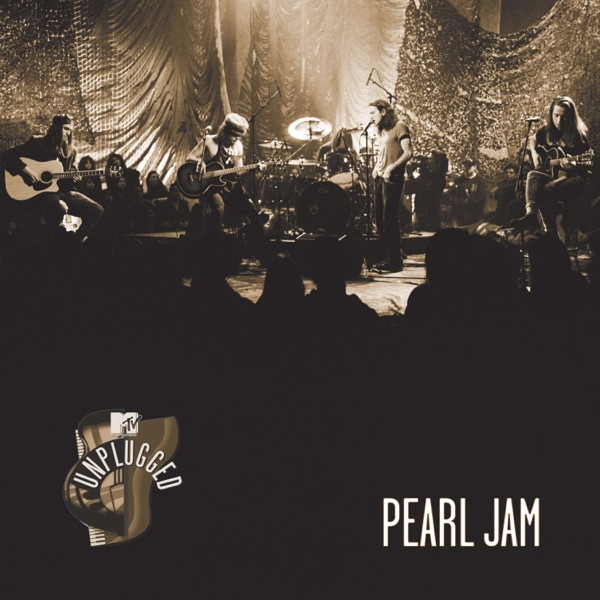

Ten
Pearl Jam
Upgrade idea: The 2009 Legacy Edition remaster (88697413021) is considered the definitive version. No Mobile Fidelity or Analogue Productions edition exists. This MPO/Sterling pressing is the best currently available.
Production notes
Tracklist (Discogs)
| A1 | Once | |
| A2 | Even Flow | |
| A3 | Alive | |
| A4 | Why Go | |
| A5 | Black | |
| A6 | Jeremy | |
| B1 | Oceans | |
| B2 | Porch | |
| B3 | Garden | |
| B4 | Deep | |
| B5 | Release |
Personnel & credits
- Michael Goldstone — A&R
- Jeff Ament — Art Direction, Concept By
- Jeff Ament — Bass
- Walter Gray — Cello
- Lisa Sparagano — Design
- Risa Zaitschek — Design
- Dave Krusen — Drums
- Adrian Moore (3) — Engineer [Additional Engineering]
- Dave Hillis — Engineer [Additional Engineering]
- Don Gilmore — Engineer [Additional Engineering]
- Stone Gossard — Guitar
- Daniel Krieger — Lacquer Cut By
- Mike McCready — Lead Guitar
- Eddie Vedder — Lyrics By
- Kelly Curtis — Management
- Bob Ludwig — Mastered By
- Tim Palmer — Mixed By
- Dave Krusen — Music By
- Eddie Vedder — Music By
- Jeff Ament — Music By
- Mike McCready — Music By
- Stone Gossard — Music By
- Lance Mercer — Photography By
- Rick Parashar — Piano, Organ, Percussion
- Pearl Jam — Producer
- Rick Parashar — Producer
- Eddie Vedder — Vocals
Identifiers
- Barcode: 8 89853 76871 4 (Printed)
- Barcode: 0889853768714 (Scanned)
- Label Code: LC00199
- Rights Society: BIEM/GEMA
- Matrix / Runout: MPO 88697413021 - A 15-0365 NL Kr SST [MPO logo]® 19 101579 (Side A runout, variant 1)
- Matrix / Runout: MPO 88697413021 - B 15-0365 NL Kr SST [MPO logo]® 18 56741 (Side B runout, variant 1)
- Matrix / Runout: MPO 88697413021 - A 15-0365 NL Kr SST [MPO logo]® 19 101330 (Side A runout, variant 2)
- Matrix / Runout: MPO 88697413021 - B 15-0365 NL Kr SST [MPO logo]® 19 101205 (Side B runout, variant 2)
- Matrix / Runout: MPO 88697413021 - A 15-0365 NL Kr SST [MPO logo]® 19 122081 (Side A runout, variant 3)
- Matrix / Runout: MPO 88697413021 - B 15-0365 NL Kr SST [MPO logo]® 19 100312 (Side B runout, variant 3)
- Matrix / Runout: MPO 88697413021 - A 15-0365 NL Kr SST [MPO logo]® 19 145310 (Side A runout, variant 4)
- Matrix / Runout: MPO 88697413021 - B 15-0365 NL Kr SST [MPO logo]® 19 141888 (Side B runout, variant 4)
- Matrix / Runout: MPO 88697413021 - A 15-0365 NL Kr SST [MPO logo]® 19 145267 (Side A runout, variant 5)
- Matrix / Runout: MPO 88697413021 - B 15-0365 NL Kr SST [MPO logo]® 19 145309 (Side B runout, variant 5)
- Matrix / Runout: MPO 88697413021 - A 15-0365 NL Kr SST [MPO logo]® 19 148933 (Side A runout, variant 6)
- Matrix / Runout: MPO 88697413021 - B 15-0365 NL Kr SST [MPO logo]® 19 148947 (Side B runout, variant 6)
- Matrix / Runout: MPO 88697413021 - A 15-0365 NL Kr SST [MPO logo]® 19 138610 (Side A runout, variant 7)
- Matrix / Runout: MPO 88697413021 - B 15-0365 NL Kr SST [MPO logo]® 19 137776 (Side B runout, variant 7)
- Matrix / Runout: MPO 88697413021 - A 15-0365 NL Kr SST [MPO logo]® 19 122122 (Side A runout, variant 8)
- Matrix / Runout: MPO 88697413021 - B 15-0365 NL Kr SST [MPO logo]® 19 122168 (Side B runout, variant 8)
- Matrix / Runout: MPO 88697413021 - A 15-0365 NL Kr SST [MPO logo]® 19 (Side A runout, variant 9)
- Matrix / Runout: MPO 88697413021 - B 15-0365 NL Kr SST [MPO logo]® 19 102921 (Side B runout, variant 9)
- Matrix / Runout: 88697413021-A 15-0365 NL Kr SST [MPO logo] ® 21 201681 (Side A runout, variant 10)
- Matrix / Runout: 88697413021-B 15-0365 NL Kr SST [MPO logo] ® 21 200996 (Side B runout, variant 10)
- Matrix / Runout: 88697413021-A 15-0365 NL Kr SST [MPO logo] ® 21 201550 (Side A runout, variant 11)
- Matrix / Runout: 88697413021-B 15-0365 NL Kr SST [MPO logo] ® 21 200996 (Side B runout, variant 11)
- Matrix / Runout: 88697413021-A 15-0365 NL Kr SST [MPO logo] ® 21 204037 (Side A runout, variant 12)
- Matrix / Runout: 88697413021-B 15-0365 NL Kr SST [MPO logo] ® 21 204056 (Side B runout, variant 12)
- Matrix / Runout: 88697413021-A 15-0365 NL Kr SST [MPO logo] ® 21 201756 (Side A runout, variant 13)
- Matrix / Runout: 88697413021-B 15-0365 NL Kr SST [MPO logo] ® 21 201753 (Side B runout, variant 13)
- Matrix / Runout: none (Side A runout, variant 14)
- Matrix / Runout: 88697413021-B 15-0365 NL Kr SST [MPO logo] ® 21 218909 (Side B runout, variant 14)
- Matrix / Runout: 88697413021-A 15-0365 NL Kr SST [MPO logo] ® 21 204080 (Side A runout, variant 15)
- Matrix / Runout: 88697413021-B 15-0365 NL Kr SST [MPO logo] ® 21 204081 (Side B runout, variant 15)
- Matrix / Runout: none (Side A runout, variant 16)
- Matrix / Runout: 88697413021-B 15-0365 NL Kr SST [MPO logo] ® 21 231232 (Side B runout, variant 16)
- Matrix / Runout: 88697413021-A 15-0365 NL Kr SST [MPO logo] ® 21 231234 (Side A runout, variant 17)
- Matrix / Runout: 88697413021-B 15-0365 NL Kr SST [MPO logo] ® 21 231234 (Side B runout, variant 17)
- Matrix / Runout: 88697413021-A 15-0365 NL Kr SST [MPO logo] ® 22 254692 (Side A runout, variant 18)
- Matrix / Runout: 88697413021-B 15-0365 NL Kr SST [MPO logo] ® 22 255683 (Side B runout, variant 18)
- Matrix / Runout: 88697413021-A 15-0365 NL Kr SST [MPO logo] ® 22 255681 (Side A runout, variant 19)
- Matrix / Runout: 88697413021-B 15-0365 NL Kr SST [MPO logo] ® 22 256404 (Side B runout, variant 19)
- Matrix / Runout: 88697413021-A 15-0365 NL Kr SST [MPO logo] ® 20 156734 (Side A runout, variant 20)
- Matrix / Runout: 88697413021-B 15-0365 NL Kr SST [MPO logo] ® 20 156735 (Side B runout, variant 20)
- Matrix / Runout: 88697413021-A 15-0365 NL Kr SST [MPO logo] ® 20 183556 (Side A runout, variant 21)
- Matrix / Runout: 88697413021-B 15-0365 NL Kr SST [MPO logo] ® 20 183527 (Side B runout, variant 21)
- Matrix / Runout: 88697413021-A 15-0365 NL Kr SST [MPO logo] ® 18 56352 (Side A runout, variant 22)
- Matrix / Runout: 88697413021-B 15-0365 NL Kr SST [MPO logo] ® 18 66353 (Side B runout, variant 22)
- Matrix / Runout: 88697413021-A 15-0365 NL Kr SST [MPO logo] ® 18 13381 (Side A runout, variant 23)
- Matrix / Runout: 88697413021-B 15-0365 NL Kr SST [MPO logo] ® 18 13380 (Side B runout, variant 23)
- Matrix / Runout: 88697413021-A 15-0365 NL Kr SST [MPO logo] ® 18 101348 (Side A runout, variant 24)
- Matrix / Runout: 88697413021-B 15-0365 NL Kr SST [MPO logo] ® 18 101349 (Side B runout, variant 24)
- Matrix / Runout: 88697413021-A 15-0365 NL Kr SST [MPO logo] ® 23 326479 (Side A runout, variant 25)
- Matrix / Runout: 88697413021-B 15-0365 NL Kr SST [MPO logo] ® 23 326444 (Side B runout, variant 25)
- Matrix / Runout: 88697413021-A 15-0365 NL Kr SST [MPO logo] ® 23 327435 (Side A runout, variant 26)
- Matrix / Runout: 88697413021-B 15-0365 NL Kr SST [MPO logo] ® 23 327290 (Side B runout, variant 26)
- Matrix / Runout: 88697413021-A 15-0365 NL Kr SST [MPO logo] ® 18 56690 (Side A runout, variant 27)
- Matrix / Runout: 88697413021-B 15-0365 NL Kr SST [MPO logo] ® 19 100066 (Side B runout variant 27)
- Matrix / Runout: MPO 88697413021-A 15-0365 NL Kr SST [MPO logo] ® 20 160449 (Side A runout, variant 28)
- Matrix / Runout: MPO 88697413021-B 15-0365 NL Kr SST [MPO logo] ® 20 160501 (Side B runout variant 28)
Notes
Contains double-sided printed inner sleeve with lyrics.
Mixed by Tim Palmer for Worlds End (America) Inc.
Recorded at London Bridge Studios, Seatlle - March/April 91
Mixed at Ridge Farm Studios Dorking, England - June 91
Mastered 2008 by Bob Ludwig at Gateway Mastering, Portland, ME
All songs © 1991 Write Treatage Music/Innocent Bystander/Jumpin' Cat Music/Scribing C-Ment Songs/3 Kick Heads (GMR)
© 1991, 2017 Epic Records, a division of Sony Music Entertainment
℗ 1991 Epic Records, a division of Sony Music Entertainment
Made in the EU.
Runouts:
'MPO 88697413021 - A 15-0365 NL Kr SST' & 'MPO 88697413021 - B 15-0365 NL Kr SST' are etched, remainder is stamped.
Releases with a laser-etched MPO pressing number that start with 17 (2017) up until 23 (2023) should be treated as a variant, not as a separate release.
Notes & discrepancies
- No Apple Music match found.
Ten is Pearl Jam’s debut studio album, released in August 1991 on Epic Records, and one of the defining documents of the grunge era. Produced by Rick Parashar and Jeff Ament, it arrived weeks after Nirvana’s Nevermind and together the two albums shifted the entire axis of mainstream rock. “Alive,” “Even Flow,” “Black,” “Jeremy,” “Oceans,” and “Release” introduced Eddie Vedder’s extraordinary baritone and the band’s muscular, emotionally intense approach to hard rock. The album sold over 13 million copies in the US alone, making it one of the best-selling debut albums in history.
What sets Ten apart from its grunge contemporaries is its ambition — Rick Parashar’s production is big and anthemic rather than lo-fi and abrasive, giving the album a cinematic quality that made it accessible to a massive audience without diluting its emotional power. Vedder’s vocal performances remain some of the most committed in rock history, and Stone Gossard and Mike McCready’s guitar interplay defined a template for the decade.
Pearl Jam famously keeps their catalog off streaming services, making vinyl the primary way to hear this album outside of CD, which gives physical ownership of Ten particular significance for fans.
The 2017 reissue (Epic / Legacy catalog 88697413021) was pressed at MPO (France) with lacquer cut at Sterling Sound (SST) — an excellent quality combination. The batch code
® 21 201792confirms this specific pressing was manufactured in 2021 from the 2017 lacquers. MPO’s quality control and Sterling Sound’s mastering make this a superior modern pressing.About this 2017/2021 Europe pressing (Vinyl, LP, Reissue): Epic / Legacy catalog 88697413021, 2017 reissue pressed at MPO (France) in 2021. Mastered at Sterling Sound (SST). Barcode 889853768714. Matrix 88697413021-A 15-0365 NL Kr SST MPO ® 21.